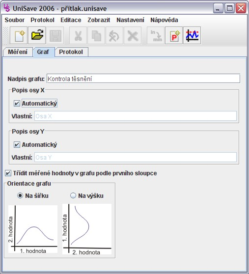

Zde je možno nastavit různé vlastnosti grafu. Toto nastavení je uloženo společně s naměřenými hodnotami grafu. Při vytvoření nového měření se hodnoty vyplní naposledy použitými hodnotami z předchozího měření.

Nadpis grafu - zde je možno zadat text, který bude použit jako nadpis grafu.
Třídit měřené hodnoty v grafu podle prvního sloupce - tato volba zapíná nebo vypíná možnost třídit naměřené hodnoty podle prvního sloupce předtím, než budou vyneseny do grafu.
Orientace grafu - tato volba umožňuje měnit orientaci grafu pomocí zaměnění os grafu.